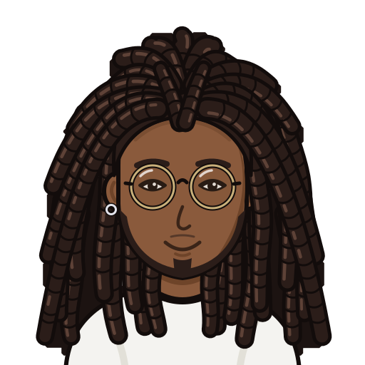
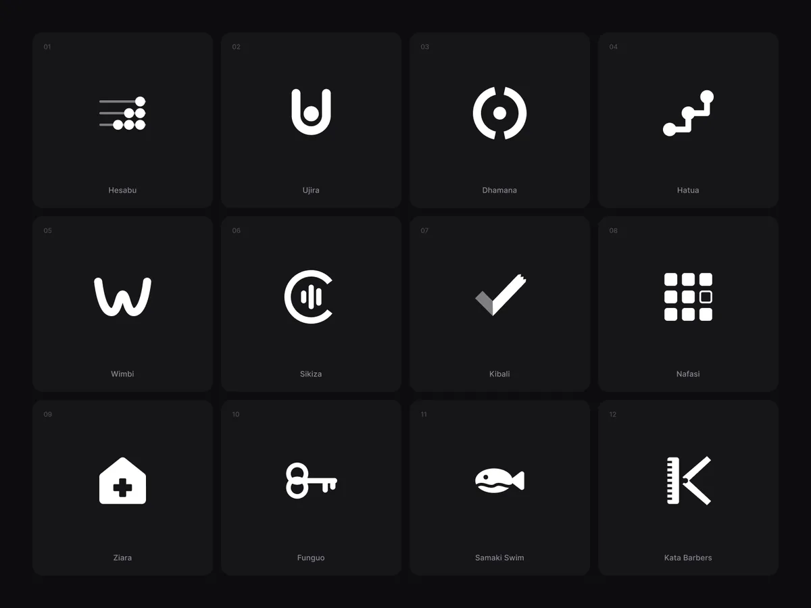
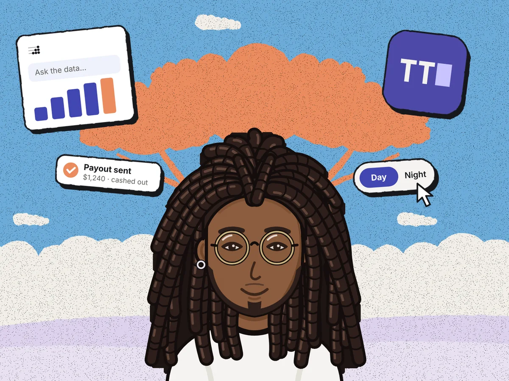
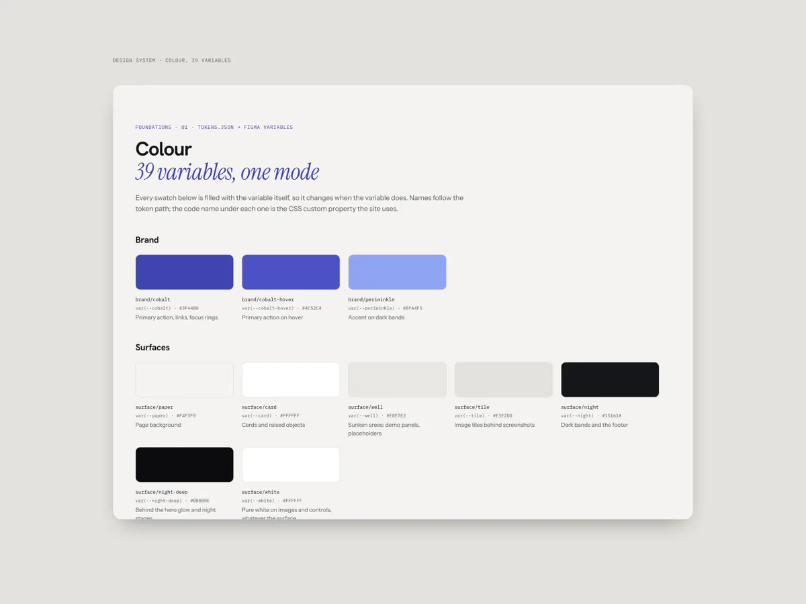
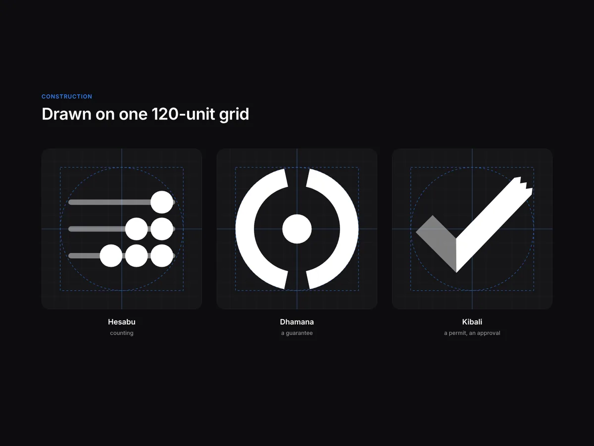
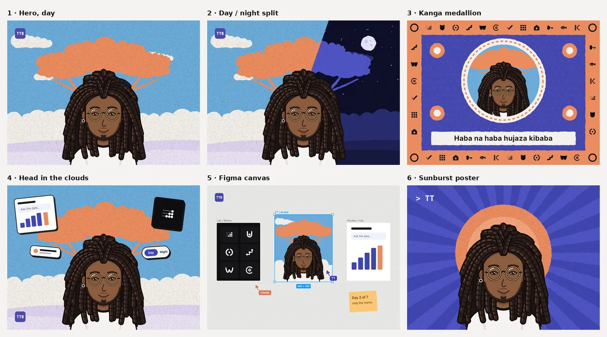
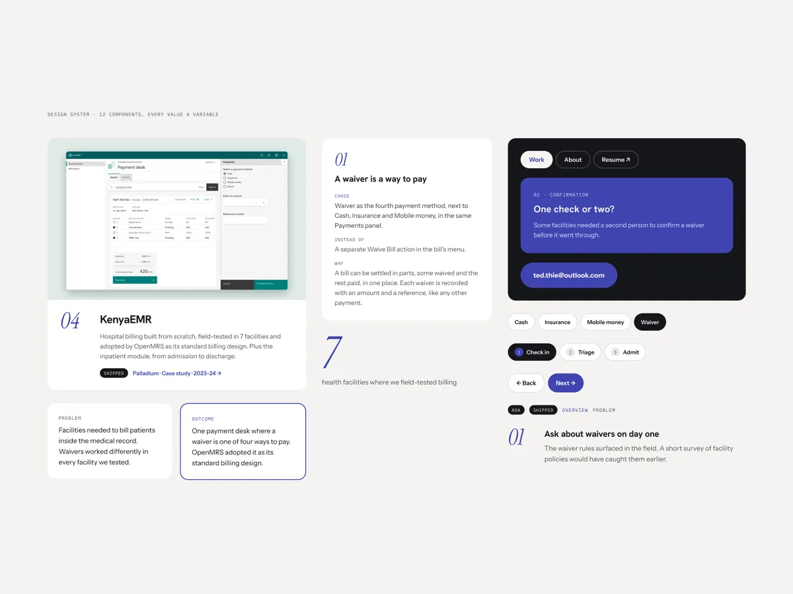

Day 5
Ujira
Payouts for Kenyans paid by clients abroad. Invoice in dollars, then withdraw to M-Pesa with the shillings, the fee and the rate shown first, and big amounts split around M-Pesa's limits.

What I make when nobody's asked: marks for brands I've invented, a product a day in the Lab, and whatever's cooking at home.

Side projects to try something new or sharpen a skill: logomarks, a profile banner, motion, and the design system behind this site.
Each one ships somewhere real, on Dribbble or on this site, so it has to hold up next to client work.






One product a day. Each Lab project takes a product type or domain I haven't shown in public yet, and goes from a brief to a working prototype you can use.
They're personal concepts, not client work. The data is invented, or public and dated, and any AI in them is scripted so every answer can be checked.
Payouts for Kenyans paid by clients abroad. Invoice in dollars, then withdraw to M-Pesa with the shillings, the fee and the rate shown first, and big amounts split around M-Pesa's limits.
Kivuko, an unsolicited redesign of the M-Pesa developer portal. Test payments land in an inbox, so you see whether money moved, not just that a request was accepted. Not affiliated with Safaricom.
An AI analyst for Kenya's mobile money data. Ask in plain words and get a chart, the steps and the CBK rows behind it, or a clear “I can't answer that”.
An AI suggests whether a patient's bill can be waived and a person decides. Every reason links to a dated source, so a wrong suggestion gets caught.
I like cooking, and some of it is worth a photo.
Photos on their wayThis tab fills up as they come in.